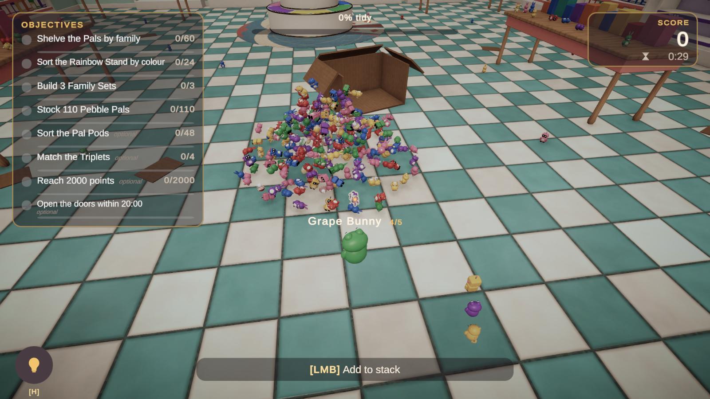
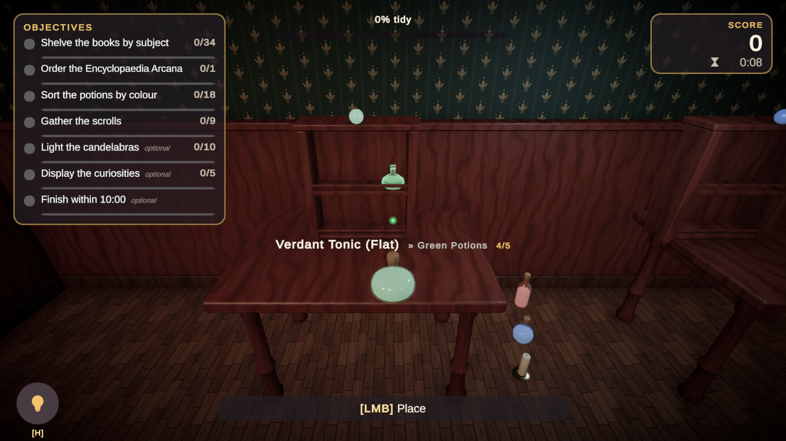

Player Controller & Interaction
A small first person controller and a device-independent interactor. Both are replaceable.
The Tidy Player prefab
TidyPlayer CharacterController, TidyFirstPersonController, TidyInputReader, TidyCursorController
Head pitch pivot (height and head bob)
Camera Camera, AudioListener, TidyInteractor, TidyPlacementPreview,
TidyCleaningInteractor, TidyCameraPunchFirst person controller
| Setting | Default |
|---|---|
| Walk / Sprint / Crouch speed | 3.2 / 5.2 / 1.6 m/s |
| Acceleration, gravity | 14, −18 |
| Sprint enabled, crouch enabled | On, on |
| Maximum pitch, look smoothing | 85°, 0 |
| Standing / crouching height | 1.75 / 1.1 m |
| Head bob | On (player setting) |
The controller respects TidyControlLock: menus, inspection and results lock movement and look without the controller knowing about them.
Using your own controller
Nothing in the framework requires TidyFirstPersonController. Keep a camera with a TidyInteractor and a component implementing ITidyPlayerInput (or the provided TidyInputReader), and honour TidyControlLock.IsLocked(TidyControlChannel.Movement) and Look in your controller.
Interactor
TidyInteractor sphere-casts from the camera (or from a touch position) each frame. Hits are sorted by distance; triggers are skipped when looking for objects and used when looking for targets. Aiming at an object already placed in a target counts as aiming at that target, so you can keep adding books by pointing at the books already on the shelf.
| Setting | Purpose |
|---|---|
| Reach Distance | Interaction distance (3 m). |
| Aim Radius | Sphere radius for forgiving aiming at tiny props (scaled by the player's Interaction Assist setting). |
| Interaction Mask | Layers considered. |
| Hold Offset | Where held objects float relative to the camera. |
| Rotate Speed / Rotate Step Degrees | Continuous and stepped rotation. |
| Interact Drops When No Target | Single-button play style. |
| Controlled Throw Distance / Drop Arc | Arcade tossing for controlled objects. |
| Inspect Offset / Rotate Multiplier | Inspection presentation. |
| Carry Capacity | How many objects the player can carry at once (demo player: 5). 1 keeps classic single-object holding. |
| Maximum Stacked Size | Largest dimension in metres an object may have to join a stack. Bigger objects are always carried alone. |
| Stack Offset / Stack Visual Scale / Stack Spacing | Where the carried stack sits relative to the camera and how compact it looks. |
| Auto Select Matching Object | While carrying several objects, aiming at a target brings a matching object from the stack to the hand. |
Events
HoverChanged, HeldChanged, CarriedChanged, ObjectPickedUp, ObjectPlaced, PlacementRejected, ObjectDropped, InspectChanged, ContextChanged. The context (Idle, CanPickUp, Holding, CanStack, CanPlace, CanPlaceIncorrect, WrongPlace, TargetFull, Inspecting) drives prompts and crosshair styling.
Carrying a stack

Like many modern tidying games, the player can gather several small objects before walking to their homes. Set Carry Capacity on the interactor above 1 to enable it; the demo player carries up to 5 objects.
- Gather. While holding an object, aim at another loose object and press Interact. It joins the stack and becomes the object in hand. The prompt reads Add to stack and the name label shows
3/5. - Place. Aim at a target and press Interact as usual. The object in hand is placed and the next one from the stack moves into the hand, so a full stack can be emptied with quick clicks.
- Smart selection. When the object in hand does not belong to the aimed target but another stacked object does, it is swapped into the hand automatically. Turn this off with Auto Select Matching Object.
- Drop. Drop and Toss release the object in hand; the rest of the stack stays in your arms.
DropAll()empties everything.

Which objects can be stacked
| Rule | Where |
|---|---|
| Only loose objects join a stack. Placed objects are still picked up with empty hands. | Built in |
| Objects larger than Maximum Stacked Size are always carried alone. | Interactor |
| Carry In Stack (Capabilities) turns stacking off for an object type, for example tools or fragile items. | Object Definition |
Cleaning tools are never stacked. Add your own rules through TidyInteractor.StackFilter. | Code |
Scripting: CarryCapacity, CarriedCount, StackedObjects, IsCarryingStack, CanStack(obj), TryAddToStack(obj), SelectCarried(obj), DropAll() and the CarriedChanged event. A simple upgrade system can raise CarryCapacity at runtime.
if (TidyServices.TryGet(out TidyInteractor interactor))
{
interactor.CarryCapacity = 8;
}Physics vs controlled handling
| Controlled | Physics | |
|---|---|---|
| Held | Glides to the hold point, colliders off | Rigidbody driven by velocity, collides with the world |
| Dropped | Settles upright on the surface below with a small bounce. Objects resting on top of a picked-up object settle down too | Falls and tumbles |
| Thrown | Arcs to the aimed point | Launched with Throw Speed |
| Inspected | Turned in front of the camera | Made kinematic while inspected so it never jitters, and pushed back to fit large objects in view |
| Best for | Hundreds of small props, mobile, precise sorting | Boxes, furniture-like props, physical fun |
Choose per object type through the TidyPhysicsProfile on the definition. Placed objects are always kinematic, so shelves never collapse.
Highlights and preview
TidyOutlineHighlighter draws an inverted-hull outline with Graphics.RenderMesh, so no material is modified and batching is preserved. Styles: Hover, Hint (pulsing, visible through walls), Valid, Invalid. Meshes that store smooth normals in UV3 (all demo meshes do) get gap-free outlines on hard edges. TidyPlacementPreview renders a translucent ghost of the held object at the candidate pose, tinted by whether the placement is correct, accepted-but-wrong or rejected.
Creating custom interaction types
Interaction types beyond pick-and-place (switches, drawers, doors, levers) are best built as small components that react to the interactor's events or poll its hover target. A drawer that opens when clicked:
using TidyUpFramework.Core;
using TidyUpFramework.Input;
using TidyUpFramework.Interaction;
using UnityEngine;
public sealed class ClickToOpenDrawer : MonoBehaviour
{
[SerializeField] Transform drawer;
[SerializeField] Vector3 openOffset = new Vector3(0f, 0f, 0.35f);
bool isOpen;
void Update()
{
if (!TidyServices.TryGet(out TidyInteractor interactor) || !TidyServices.TryGet(out ITidyPlayerInput input))
{
return;
}
if (interactor.HeldObject != null || !input.InteractPressed || !interactor.TryAim(out var hit) || hit.collider.transform != transform)
{
return;
}
isOpen = !isOpen;
var target = drawer.parent.TransformPoint(isOpen ? openOffset : Vector3.zero);
TidyTweenRunner.MovePose(drawer, target, drawer.rotation, 0.3f, TidyEaseType.OutCubic);
}
}Put a TidyContainer on the drawer so it also accepts objects.